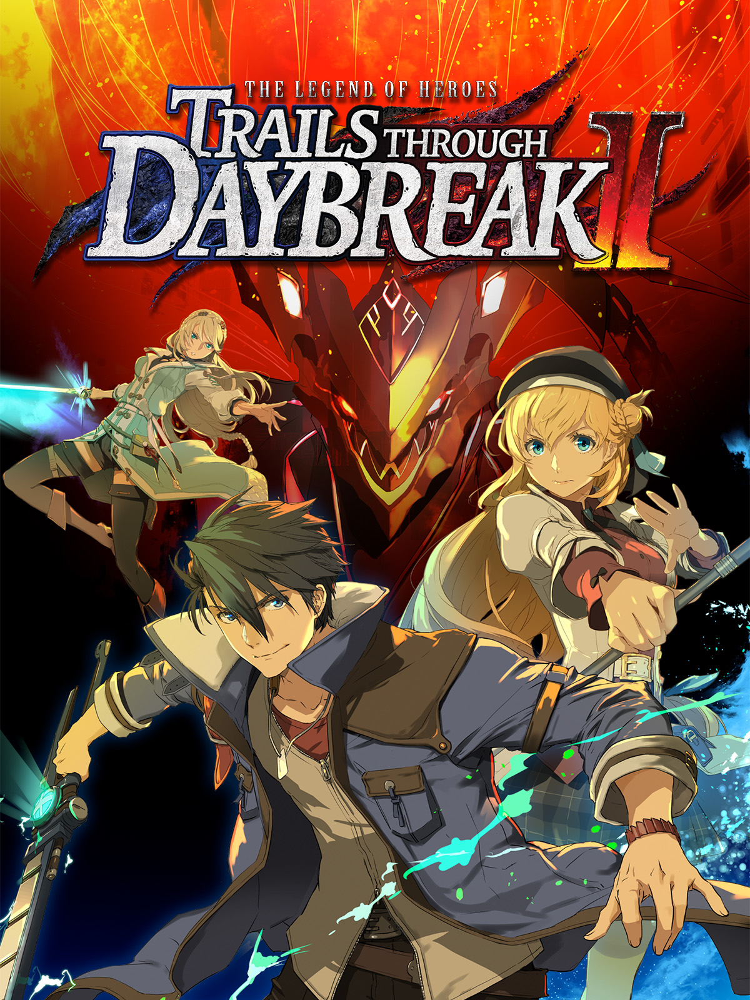

＜—Back
Trails through Daybreak II
RPG
Company: NIS America
Official Site

No longer threatened by the mafia organization Almata, the people of Calvard have returned to their peaceful lives. But one day, a shocking series of murders involving a mysterious crimson beast sets the wheels of fate in motion once again. Various factions spring into action – both those who abide by the law to uncover the truth and those looking to capitalize on any new developments wherever possible, no matter how sinister.
With chaos once again looming on the horizon, the spriggan Van Arkride receives an unexpected visitor, prompting his own investigation. Who is behind the murders, and what is their goal? The sands of time bring old and new faces together for this thrilling second installment in the Trails through Daybreak saga.